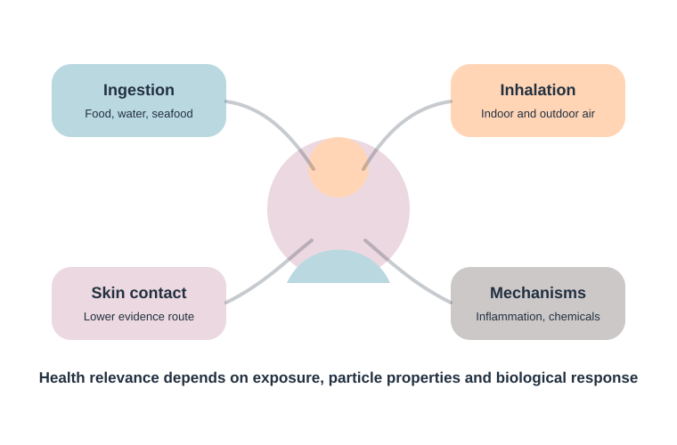

Ingestion
Food, drinking water and seafood are common exposure pathways in the literature. The measured concentrations vary greatly because methods are not fully harmonised.
Microplastics can be discussed through ingestion, inhalation and possible dermal contact. The level of risk depends on particle size, shape, polymer type, additives, concentration, exposure duration and biological response.

Food, drinking water and seafood are common exposure pathways in the literature. The measured concentrations vary greatly because methods are not fully harmonised.
Airborne fibres and particles are relevant in indoor and outdoor environments. Small particles may be of special interest for respiratory exposure studies.
Skin contact is discussed, but it is usually considered less certain than ingestion and inhalation. Research continues, especially for very small particles and product-related exposure.
The mechanisms below are research themes, not a claim that every exposure produces disease. Dose, particle properties and study conditions matter.
Experimental and review studies discuss inflammatory response and oxidative stress as plausible mechanisms, particularly when particles are small, persistent or chemically active.
Particles may contain additives or sorb pollutants from the environment. This makes chemical composition as important as particle number.
Shape, surface roughness and fibre-like geometry may influence how particles interact with tissues or biological barriers.
Gastrointestinal exposure raises questions about gut microbiota, barrier integrity and local biological response, but evidence strength varies across studies.
Current science supports concern and further research, but it also calls for careful reporting. Results should separate confirmed exposure, experimental biological effects, epidemiological association and proven clinical causation.